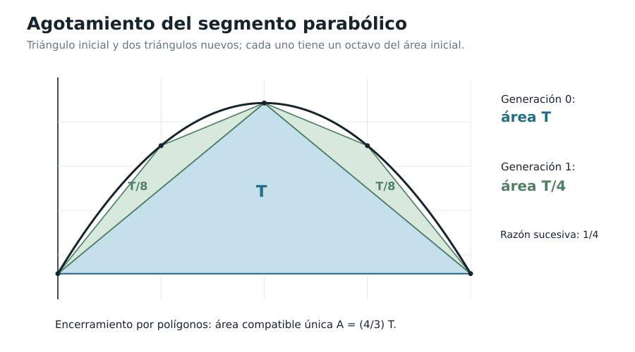

Capítulo 4. Cuadraturas y el desafío del área
Índice del libro · Prefacio · Itinerarios
Exposición · Ejercicios · Soluciones · Notas históricas
Pregunta generadora. Sabemos calcular exactamente el área de un triángulo y de un rectángulo. ¿Cómo asignar un valor justificado a una región de contorno curvo, de tal manera que distintas aproximaciones geométricas no produzcan respuestas incompatibles?
Una región de contorno curvo ofrece una dificultad que no aparece al medir un rectángulo. Podemos inscribir en ella un triángulo y calcular exactamente su área, pero quedarán partes sin cubrir; si añadimos más triángulos, el cálculo seguirá siendo exacto para el polígono construido y todavía tendremos que averiguar cuánto dejamos fuera. La pregunta por el área se convierte así en una pregunta por el resto: necesitamos aproximaciones que permitan hacerlo menor que cualquier tolerancia y demostrar que el valor buscado queda determinado por ellas.
El segmento parabólico ofrecerá una construcción especialmente clara. Un primer triángulo deja dos segmentos menores; al repetir el procedimiento, las áreas añadidas siguen una regla sencilla, y las partes aún descubiertas admiten una cota que podemos calcular. Después estudiaremos rectángulos bajo una gráfica: su altura depende del punto elegido en cada subintervalo, por lo que el control del error tendrá que servir también para elecciones distintas. La geometría de polígonos, los límites de C00 y algunos resultados de C02–C03 bastarán para recorrer estos problemas antes de definir la integral general.
4.1. Cuadrar una región: qué se busca exactamente
Definición 4.1 (EDC-C04-DEF-001; cuadratura en sentido geométrico). Dada una región plana a la que se haya asignado un área, su cuadratura consiste en determinar un cuadrado —o una figura rectilínea de área conocida— con la misma área. La palabra no significa necesariamente obtener una primitiva, escribir una integral o construir un cuadrado con regla y compás bajo restricciones que habría que especificar aparte.
Tomamos como propiedades geométricas previas la fórmula del área de un rectángulo de lados positivos, \(A=bh\); la del triángulo, \(A=bh/2\); la aditividad para uniones finitas de polígonos de interiores disjuntos; y la monotonía: si un polígono está contenido en otro, el área del primero no supera la del segundo. Los argumentos de este capítulo se basan en estas reglas finitas y en los límites y desigualdades establecidos en C00. Todavía no adoptamos una función general de área para toda región curva.
La exigencia de monotonía implica una estrategia: si \(P\) es una figura poligonal interior y \(Q\) una figura poligonal exterior a una región \(\mathcal R\), cualquier área \(A(\mathcal R)\) compatible con las reglas geométricas debe cumplir
\[ A(P)\le A(\mathcal R)\le A(Q). \]
Cualquier valor compatible tendría que quedar entre esas dos áreas conocidas. La condición permite descartar candidatos, aunque para demostrar que existe alguno debemos encontrar un número que satisfaga todas las comparaciones requeridas. La construcción de los polígonos tendrá por ello dos tareas: estrechar las cotas y asegurar que mantienen encerrado un mismo valor.
Observación de unidades. Una longitud tiene unidades de \(L\); una superficie, de \(L^2\). Si multiplicamos ambas coordenadas por un factor \(c>0\), el área de un polígono se multiplica por \(c^2\). En cambio, una transformación que sólo estire la coordenada horizontal por \(c\) multiplica áreas por \(c\). La dimensionalidad será una comprobación rápida de nuestras fórmulas.
4.2. El agotamiento: una dificultad siempre menor que otra
Un procedimiento de aproximación puede seguir dejando un resto después de cada etapa y, aun así, determinar una magnitud con la precisión que pidamos. Lo que necesitamos probar es que para cada tolerancia positiva hay una etapa finita a partir de la cual el resto resulta menor. Una reducción por el mismo factor en todos los pasos proporciona ese control.
Lema 4.1 (EDC-C04-LEM-001; agotamiento geométrico). Sean \(R_0>0\) y \(0<q<1\). Si una sucesión de restos no negativos satisface \(R_n\le R_0q^n\) para todo \(n\ge0\), entonces, para cada \(\varepsilon>0\), existe \(N\) tal que \(R_n<\varepsilon\) para \(n\ge N\).
Demostración. La hipótesis reduce el problema a mostrar que las potencias de \(q\) se hacen pequeñas. Para compararlas con una expresión más fácil de controlar, tomemos su recíproco \(t=q^{-1}>1\). La desigualdad binomial da \(t^n=(1+(t-1))^n\ge1+n(t-1)\) para \(n\ge1\): a los dos primeros términos del desarrollo se añaden términos no negativos. Al tomar recíprocos de números positivos obtenemos
\[ 0\le R_n\le\frac{R_0}{1+n(t-1)}\longrightarrow0 \]
por el principio arquimediano (EDC-C00-THM-001). En efecto, el denominador supera cualquier cantidad fijada al elegir \(n\) suficientemente grande, y por tanto podemos hacer que la fracción sea menor que una tolerancia \(\varepsilon>0\). Ese mismo control vale para todos los índices posteriores y proporciona el \(N\) requerido. \(\square\)
En la Proposición X.1 de los Elementos, Euclides compara dos magnitudes y disminuye reiteradamente la mayor, retirando más de la mitad de lo que queda hasta dejar un residuo menor que la magnitud dada. Nuestro lema expresa en sucesiones de números reales una forma de control que permite comprender esa lógica de agotamiento. El texto histórico y el alcance de la comparación se recogen en las notas históricas H1.
Proposición 4.1 (EDC-C04-PRP-001; unicidad por encaje). Sean \(L_n\le U_n\) números reales para cada \(n\ge1\), y supongamos que \(U_n-L_n\to0\). Si dos números \(A,B\) satisfacen \(L_n\le A,B\le U_n\) para todo \(n\), entonces \(A=B\).
Demostración. Como \(A\) y \(B\) pertenecen al mismo intervalo \([L_n,U_n]\), la distancia entre ellos no puede superar su anchura: \(|A-B|\le U_n-L_n\) para cada \(n\). Si fueran distintos, esa distancia sería un número positivo fijo. Podemos entonces elegir \(n\) tan grande que \(U_n-L_n<|A-B|\), porque las anchuras tienden a cero, y obtendríamos dos desigualdades incompatibles. Por tanto \(A=B\). \(\square\)
El argumento comienza con dos números presentes en todos los intervalos y demuestra que deben coincidir. No asegura que haya alguno: los intervalos podrían hacerse cada vez más estrechos mientras se desplazan por la recta. En la cuadratura parabólica comprobaremos directamente que un candidato permanece dentro de cada encaje; para aproximaciones más generales necesitaremos estudiar cómo se relacionan unas particiones con otras.
4.3. El segmento parabólico y el triángulo fundamental
Consideremos \(a<b\) y \(k>0\). Entre la cuerda horizontal \(y=0\) y el arco de la parábola
\[ f(x)=k(x-a)(b-x),\qquad a\le x\le b, \]
queda una región convexa hacia arriba respecto de la cuerda (la gráfica, por ser cóncava, está encima de ella). Escribir \(\ell=b-a\) permite reconocer
\[ f(x)=k\left[\frac{\ell^2}{4}-\left(x-\frac{a+b}{2}\right)^2\right]. \]
La altura máxima es \(H=k\ell^2/4\), alcanzada en el punto medio \(m=(a+b)/2\). Construimos el triángulo con vértices \((a,0)\), \((m,H)\) y \((b,0)\). Su área, calculable sin conocer aún el área de la región curva, es
\[ T=\frac{\ell H}{2}=\frac{k\ell^3}{8}. \]
El triángulo deja a ambos lados del vértice una región entre el arco y uno de sus lados oblicuos. Para repetir la construcción necesitamos saber qué ocurre al medir la separación respecto de esas nuevas cuerdas: la fórmula inicial utilizaba una base horizontal, y ahora las bases están inclinadas. El lema siguiente muestra que la diferencia con una cuerda sigue siendo una cuadrática de la misma forma, con la anchura del nuevo subintervalo en lugar de la original.
Lema 4.2 (EDC-C04-LEM-002; diferencia con la cuerda). Sea \(f(x)=Ax^2+Bx+C\) con \(A<0\), y sea \(\ell_{u,v}(x)\) la recta secante que interpola \(f\) en \(u<v\). Entonces
\[ f(x)-\ell_{u,v}(x)=(-A)(x-u)(v-x),\qquad u\le x\le v. \]
El triángulo con base sobre la cuerda \([(u,f(u)),(v,f(v))]\) y vértice en la gráfica sobre el punto medio tiene área \((-A)(v-u)^3/8\), calculada como base horizontal por altura vertical dividida por dos.
Demostración. Al restar una recta de un polinomio cuadrático, conservamos su coeficiente de grado dos, \(A\). Además, la recta secante coincide con \(f\) en \(u\) y \(v\), así que la diferencia tiene esos dos ceros. Queda determinada por ellos y por su coeficiente principal: \(f-\ell_{u,v}=A(x-u)(x-v)=(-A)(x-u)(v-x)\).
La separación vertical respecto de la cuerda es positiva en el interior y alcanza su máximo en el punto medio, con valor \((-A)(v-u)^2/4\). Aunque la cuerda sea oblicua, el área triangular se puede calcular con la anchura horizontal y esa separación vertical. Para verlo, los dos vectores desde el extremo izquierdo tienen componentes \((v-u,f(v)-f(u))\) y \(((v-u)/2,f((u+v)/2)-f(u))\). Su determinante es \((v-u)\) veces la diferencia entre la ordenada del vértice y la ordenada de la cuerda en el punto medio. Al dividir por dos, obtenemos \((-A)(v-u)^3/8\). \(\square\)
Teorema 4.1 (EDC-C04-THM-001; disminución de triángulos parabólicos). Cuando una cuerda de longitud horizontal \(d\) se divide en sus dos mitades y en cada subsegmento se inscribe el triángulo correspondiente, el área de cada nuevo triángulo es \(1/8\) del área del triángulo construido sobre la cuerda original; el área total añadida por la pareja es \(1/4\) de la anterior.
Demostración. El Lema 4.2 expresa el área de cada triángulo en función del cubo de la anchura horizontal. En las dos cuerdas nuevas el coeficiente cuadrático sigue siendo el mismo, \(k=-A>0\), mientras que la anchura pasa de \(d\) a \(d/2\). Por eso el área de cada triángulo nuevo es \(k(d/2)^3/8=(1/8)(kd^3/8)\): dividir la anchura por dos divide esa área por ocho.
Hay dos subcuerdas, una en cada mitad horizontal, y los interiores de los triángulos no se solapan. Sus áreas se suman y el total añadido es dos octavos, es decir, un cuarto del área del triángulo original. \(\square\)
Cada triángulo deja dos segmentos donde podemos repetir el mismo procedimiento. En la generación \(n\) se agregan \(2^n\) triángulos, pero el área individual se ha dividido por ocho en cada paso y vale \(T/8^n\). El número de piezas crece más despacio que disminuye su tamaño: al reunirlas obtenemos un área total \(T/4^n\) para esa generación.

4.4. Una suma finita y un resto geométrico explícito
Tras construir las generaciones \(0,1,\ldots,n-1\) (con \(n\ge1\)), obtenemos un polígono inscrito de área
\[ P_n=T\sum_{j=0}^{n-1}4^{-j} =\frac{4T}{3}\bigl(1-4^{-n}\bigr). \]
Para obtener la última expresión basta multiplicar la suma finita por \(1/4\) y restarla de la suma original. Los términos intermedios aparecen una vez con cada signo y se cancelan; quedan el primero y el término que el desplazamiento añadió al final. Así conocemos exactamente la distancia entre \(P_n\) y el candidato \(4T/3\):
\[ \frac{4T}{3}-P_n=\frac{4T}{3\cdot4^n}>0. \]
La sucesión de áreas interiores se aproxima a \(4T/3\), pero aún falta relacionar ese límite con la región completa. Necesitamos cubrir las partes que quedan entre el polígono y el arco mediante figuras de área conocida, y conseguir que la suma de esas áreas tienda a cero.
Lema 4.3 (EDC-C04-LEM-003; cobertura del resto). En la configuración del §4.3, después de \(n\) generaciones el conjunto que queda entre el arco parabólico y el polígono inscrito puede cubrirse con un número finito de franjas de lados verticales, cada una situada entre una cuerda y una paralela superior, cuya suma de áreas es
\[ B_n=\frac{k\ell^3}{4^{n+1}}=\frac{2T}{4^n}. \]
Demostración. Después de \(n\) generaciones, la frontera superior del polígono está formada por cuerdas sobre \(2^n\) subintervalos de igual anchura \(d=\ell/2^n\). En cada subintervalo queda un segmento entre la cuerda y el arco. El Lema 4.2 nos dice que la separación vertical no supera \(kd^2/4\).
Para cubrir ese segmento, desplazamos la cuerda hacia arriba en una distancia vertical \(kd^2/4\) y cerramos los dos extremos con lados verticales. La franja resultante es un paralelogramo que contiene todos los puntos del segmento: en cada posición horizontal, la curva está entre la cuerda inferior y su paralela superior. Su área es anchura horizontal por separación vertical, \(kd^3/4\), como se comprueba por la misma fórmula de determinantes utilizada para el triángulo.
Las proyecciones horizontales de las franjas no se solapan salvo en los extremos. Podemos sumar sus áreas y obtenemos
\[ 2^n\frac{k(\ell/2^n)^3}{4} =\frac{k\ell^3}{4\cdot4^n}=\frac{2T}{4^n}. \]
La inclusión de los restos curvos en estas cubiertas es una afirmación geométrica que podemos comprobar sin asignar todavía un área a cada resto. Sus cubiertas tienen áreas poligonales finitas, y ésas son las que acabamos de sumar. \(\square\)
Contrato de área por agotamiento (MAT-03). Para este segmento parabólico particular, un valor de área compatible significa un número real \(A\) que satisface \(P_n\le A\le P_n+B_n\) para cada entero \(n\ge1\), donde \(P_n\) es el área del polígono interior de la generación correspondiente y \(B_n\) la suma de áreas de las cubiertas exteriores del Lema 4.3. La comparación se funda en inclusiones de regiones y áreas poligonales finitas. No hemos definido todavía un funcional de área para todas las regiones curvas. El objetivo inmediato es demostrar que estos encerramientos concretos poseen un único número compatible; si una noción geométrica previa de área respeta la inclusión y coincide con las áreas poligonales, tendrá forzosamente ese valor para el segmento. La integral general será construida independientemente en C05 mediante todas las particiones y las sumas de Darboux.
Teorema 4.2 (EDC-C04-THM-002; cuadratura del segmento parabólico). Para un segmento parabólico de la forma descrita en §4.3, la construcción de polígonos interiores y exteriores determina un único valor compatible de área, en el sentido definido arriba, y éste es
\[ \boxed{A=\frac43T=\frac{k(b-a)^3}{6}.} \]
Demostración. El área interior conocida es \(P_n\), y al añadir las franjas del Lema 4.3 obtenemos una cubierta poligonal de la región con área a lo sumo \(P_n+B_n\). Según el contrato de compatibilidad, el valor buscado debe pertenecer, para todo \(n\ge1\), al intervalo cuyos extremos son
\[ L_n=\frac{4T}{3}\bigl(1-4^{-n}\bigr) \quad\text{y}\quad U_n=L_n+\frac{2T}{4^n}. \]
Comprobemos primero que esos requisitos admiten un número. El cálculo de las sumas interiores sugiere \(A_0=4T/3\); al compararlo con cada extremo obtenemos \(A_0-L_n=4T/(3\cdot4^n)\) y \(U_n-A_0=2T/(3\cdot4^n)\). Ambas diferencias son no negativas, luego \(A_0\) está en todos los intervalos. Esto prueba la existencia de un valor compatible con los encerramientos.
Para la unicidad, la distancia entre sus extremos es \(U_n-L_n=2T/4^n\), que tiende a cero por el Lema 4.1. Cualquier otro valor compatible compartiría cada intervalo con \(A_0\), y la Proposición 4.1 obliga a que coincidan. El único valor es por tanto \(4T/3\); al sustituir \(T=k(b-a)^3/8\) obtenemos también \(k(b-a)^3/6\). \(\square\)
Los dos lados del encaje cumplen funciones diferentes: el polígono muestra lo que ya cubrimos y las franjas limitan lo que todavía falta. La construcción da además una medida de precisión después de cualquier número finito de generaciones. Las cuerdas oblicuas intermedias conservan ese control porque las separaciones se miden verticalmente y las áreas se calculan con sus anchuras horizontales.
La fórmula se extiende a todo arco de parábola que sea la gráfica de un polinomio cuadrático estrictamente cóncavo sobre \([a,b]\), tomando como base la cuerda que une sus extremos. La diferencia entre arco y cuerda es precisamente la función cuadrática positiva del Lema 4.2.
4.5. Arquímedes: descubrimiento, prueba y reconstrucción
La Cuadratura de la parábola combina una investigación mecánica con una demostración geométrica y culmina en el resultado de los cuatro tercios. Nuestro argumento conserva ese problema como centro, pero trabaja con coordenadas, diferencias de polinomios y límites de sucesiones. La recurrencia permite calcular lo añadido, y las cubiertas exteriores justifican el paso desde los polígonos a un valor de área para este segmento.
La carta a Dositeo que precede al tratado permite acercarse al modo en que Arquímedes presentó su trabajo. El testimonio traducido y los límites del cotejo se registran en H2. La definición de un área para funciones más generales requerirá otra construcción, capaz de comparar todas las particiones relevantes.
4.6. De los triángulos a las sumas de rectángulos
Consideremos ahora una función no negativa \(f:[a,b]\to\mathbb R\) y una subdivisión finita
\[ a=x_0<x_1<\cdots<x_n=b, \qquad\Delta_i=x_i-x_{i-1}>0. \]
Definición 4.2 (EDC-C04-DEF-002; subdivisión y finura). La lista ordenada anterior es una partición finita de \([a,b]\). Su finura es \(\|P\|=\max_i\Delta_i\). Para muestras \(\xi_i\in[x_{i-1},x_i]\), la expresión
\[ S(P,\xi;f)=\sum_{i=1}^{n}f(\xi_i)\Delta_i \]
es una suma finita de áreas de rectángulos. Todavía no definimos su límite general ni llamamos integral a ese límite.
Cuando \(f\) es creciente, la suma con muestras izquierdas es una aproximación inferior y la de muestras derechas una superior. Para \(f(x)=x^2\) sobre \([0,1]\) con \(x_i=i/n\) obtenemos los números ya encontrados en C00:
\[ L_n=\frac1n\sum_{k=0}^{n-1}\left(\frac{k}{n}\right)^2 =\frac13-\frac1{2n}+\frac1{6n^2}, \]
\[ R_n=\frac1n\sum_{k=1}^{n}\left(\frac{k}{n}\right)^2 =\frac13+\frac1{2n}+\frac1{6n^2}. \]
El número \(1/3\) queda encerrado entre ambas sumas, cuya diferencia es \(R_n-L_n=1/n\). La monotonía de \(x^2\) garantiza que el valor de cualquier muestra interior queda entre los valores de los extremos del subintervalo. Esa garantía es la que permite interpretar las dos sumas como cotas; para una función que suba y baje habrá que buscar sus mínimos y máximos en cada tramo.
Proposición 4.2 (EDC-C04-PRP-002; control para \(x^2\) sin partición uniforme). Sea \(P\) cualquier partición de \([0,1]\) con finura \(\|P\|\). Las sumas rectangulares con extremos izquierdos y derechos, respectivamente \(L(P)\) y \(U(P)\), cumplen
\[ 0\le U(P)-L(P)\le\|P\|. \]
Demostración. Como \(x^2\) es creciente en \([0,1]\), cada diferencia \(x_i^2-x_{i-1}^2\) es no negativa. Podemos por ello sustituir su multiplicador \(\Delta_i\) por la anchura mayor \(\|P\|\) sin disminuir el término. Al sumar obtenemos
\[ U(P)-L(P) =\sum_{i=1}^n(x_i^2-x_{i-1}^2)\Delta_i \le\|P\|\sum_{i=1}^n(x_i^2-x_{i-1}^2) =\|P\|. \]
En la última suma se cancelan las contribuciones de todos los puntos interiores de la partición y sólo queda \(x_n^2-x_0^2=1\). El error depende así de la anchura del mayor subintervalo, cualquiera que sea el reparto de las demás anchuras. \(\square\)
Podemos hacer que algunos subintervalos sean mucho más cortos que otros; mientras el más ancho se haga pequeño, la diferencia de las cotas se hará pequeña también. Este control será útil para comparar métodos de aproximación que eligen sus puntos de maneras distintas.
4.7. Un laboratorio finito para las potencias
Las sumas de cuadrados se pudieron evaluar con una identidad finita conocida. Para potencias de cualquier exponente entero positivo podemos encontrar el candidato sin disponer de una fórmula explícita de la suma: la derivada de \(x^{p+1}/(p+1)\) es \(x^p\), y el valor medio permite situar cada incremento de la primera función entre dos términos de las sumas que queremos controlar.
Teorema 4.3 (EDC-C04-THM-003; cuadratura numérica de potencias enteras). Para cada entero \(p\ge1\), definamos las sumas uniformes
\[ L_{n,p}=\frac1n\sum_{k=0}^{n-1}\left(\frac kn\right)^p, \qquad U_{n,p}=\frac1n\sum_{k=1}^{n}\left(\frac kn\right)^p. \]
Entonces
\[ L_{n,p}\le\frac1{p+1}\le U_{n,p},\qquad U_{n,p}-L_{n,p}=\frac1n, \]
así que ambas sucesiones convergen a \(1/(p+1)\).
Demostración. Elegimos \(F(x)=x^{p+1}/(p+1)\) porque su derivada es la potencia que aparece en los rectángulos: por C02, \(F'(x)=x^p\). Como es un polinomio, es continua y derivable en los intervalos que utilizaremos. En cada \([(k-1)/n,k/n]\), el valor medio (EDC-C03-THM-003) proporciona un \(\xi_k\) interior con
\[ F(k/n)-F((k-1)/n)=\frac1n\xi_k^p. \]
La monotonía de \(x^p\) en \([0,1]\) sitúa \(\xi_k^p\) entre las potencias de los extremos. Al multiplicar por \(1/n\) y sumar para \(k=1,\ldots,n\), la suma izquierda de rectángulos queda por debajo de la suma de incrementos de \(F\), y la derecha queda por encima. Los incrementos consecutivos se cancelan salvo el primero y el último: la suma central es \(F(1)-F(0)=1/(p+1)\).
Además, las dos sumas de extremos tienen casi todos sus términos en común. Al restarlas sólo sobreviven el valor final y el inicial:
\[ U_{n,p}-L_{n,p} =\frac1n\left[\sum_{k=1}^n(k/n)^p-\sum_{k=0}^{n-1}(k/n)^p\right] =\frac1n. \]
El candidato queda entre ambas sumas y su distancia a cualquiera de ellas no supera \(1/n\). Como esta anchura tiende a cero, las dos sucesiones convergen a \(1/(p+1)\). \(\square\)
La prueba encontró el candidato sumando incrementos de una función cuya derivada conocemos. Todas las comparaciones se hicieron sobre intervalos finitos y el límite final corresponde a estas sumas particulares. Queda por definir una integral para funciones generales y demostrar bajo qué condiciones existe; en esa teoría reaparecerá la relación entre incrementos y derivadas.
Las potencias y sus cuadraturas interesaron también a los matemáticos del siglo XVII. Los indivisibles de Cavalieri ofrecieron otra manera de abordar esas comparaciones, con procedimientos históricos distintos de nuestra prueba por el valor medio.
4.8. Rectángulos, trapecios y precisión
La elección de muestras no es indiferente si una subdivisión tiene anchura positiva. En \([0,1]\) para \(f(x)=x^2\), además de \(L_n\) y \(R_n\) podemos usar trapecios y puntos medios:
\[ T_n=\frac{L_n+R_n}{2}=\frac13+\frac1{6n^2}, \]
\[ M_n=\frac1n\sum_{k=1}^{n} \left(\frac{k-1/2}{n}\right)^2 =\frac13-\frac1{12n^2}. \]
Las fórmulas se obtienen con sumas finitas: al expandir \((k-1/2)^2\), basta reunir las sumas de cuadrados, de enteros y de términos constantes. El trapecio queda por encima del candidato \(1/3\) y el punto medio por debajo, con errores \(1/(6n^2)\) y \(1/(12n^2)\) respectivamente. Al duplicar \(n\), esos errores se dividen por cuatro. Las sumas por extremos tienen en cambio una separación \(1/n\), que al duplicar el número de subintervalos sólo se divide por dos.
Proposición 4.3 (EDC-C04-PRP-003; trapecios y convexidad). Si \(f:[a,b]\to\mathbb R\) es convexa, entonces en cada subintervalo \([u,v]\subset[a,b]\) el segmento recto que une \((u,f(u))\) y \((v,f(v))\) queda por encima de la gráfica. Si \(f\) es cóncava, ocurre la desigualdad inversa.
Demostración. Cada punto \(x\) de \([u,v]\) tiene la forma \(x=(1-t)u+tv\) con \(0\le t\le1\). La altura de la cuerda en ese punto es la misma combinación de las alturas finales, \((1-t)f(u)+tf(v)\). Por definición de convexidad (EDC-C03),
\[ f(x)\le(1-t)f(u)+tf(v), \]
que compara exactamente la ordenada de la gráfica con la de la cuerda. Si \(f\) es cóncava, aplicamos esta desigualdad a \(-f\) y al cambiar de signo se invierte el sentido. \(\square\)
La posición de las cuerdas explica por qué los trapecios cubren por exceso una región bajo una gráfica convexa no negativa. Para conocer su precisión todavía hay que estimar la separación entre cuerda y curva. En el caso cuadrático disponemos de una fórmula exacta para esa diferencia, lo que permite ver tanto el sentido como la magnitud del error.
4.9. La continuidad y un error común a todas las subdivisiones
Si \(f\) es continua sobre el intervalo cerrado \([a,b]\), el teorema de valores extremos (EDC-C00-THM-007) garantiza, en cada subintervalo \([x_{i-1},x_i]\), un mínimo \(m_i\) y un máximo \(M_i\). Construyamos dos figuras rectangulares con áreas finitas
\[ A_-(P)=\sum_{i=1}^n m_i\Delta_i, \qquad A_+(P)=\sum_{i=1}^n M_i\Delta_i. \]
Si \(f\ge0\), pueden leerse como rectángulos interiores y exteriores a la región bajo la gráfica. Para funciones con valores negativos, estas expresiones conservan sentido algebraico como sumas, pero la lectura como áreas ordinarias requiere separar las partes o trasladar verticalmente la gráfica.
Teorema 4.4 (EDC-C04-THM-004; estimación preparatoria). Sea \(f:[a,b]\to\mathbb R\) continua, con \(a<b\). Para todo \(\varepsilon>0\) existe \(\delta>0\) tal que cualquier partición finita \(P\) de \([a,b]\) con \(\|P\|<\delta\) satisface
\[ 0\le A_+(P)-A_-(P)<\varepsilon. \]
Demostración. La diferencia de las sumas es la acumulación finita de las oscilaciones \(M_i-m_i\), cada una multiplicada por la anchura \(\Delta_i\). Queremos que su total sea menor que \(\varepsilon\). Como las anchuras suman \(b-a\), elegimos una tolerancia común \(\eta=\varepsilon/[2(b-a)]\) para las oscilaciones.
La continuidad uniforme de \(f\) en \([a,b]\) (EDC-C00-THM-008) proporciona un único \(\delta>0\) tal que \(|f(x)-f(y)|<\eta\) cuando \(|x-y|<\delta\), cualquiera que sea la posición de los dos puntos. Si \(\|P\|<\delta\), los lugares donde se alcanzan el mínimo y el máximo de cada subintervalo distan menos que \(\delta\). Su existencia se sigue del teorema de valores extremos, y obtenemos \(0\le M_i-m_i<\eta\).
Multiplicamos por las anchuras positivas y sumamos:
\[ 0\le A_+(P)-A_-(P) =\sum_{i=1}^n(M_i-m_i)\Delta_i <\eta\sum_{i=1}^n\Delta_i =\frac{\varepsilon}{2}<\varepsilon. \]
La elección de \(\delta\) dependió de la función y de la tolerancia, sin depender de una partición concreta. Por eso la misma estimación vale para todas las particiones que cumplan la condición de finura. \(\square\)
Cada partición fina produce dos sumas muy próximas, y cualquier elección de muestras de esa partición queda entre ellas. Para obtener un valor común a todas las aproximaciones necesitamos relacionar también las sumas de particiones distintas. El refinamiento de particiones proporcionará esa relación en C05 y permitirá convertir este control local de oscilaciones en una definición general.
4.10. Cavalieri y el problema de los indivisibles
Podemos comparar dos figuras mirando las secciones que producen líneas o planos paralelos. Una superficie se examina entonces mediante longitudes de cortes; un sólido, mediante áreas de secciones. Los procedimientos de indivisibles de Cavalieri dirigieron la atención a esas familias de cortes y permitieron abordar problemas de cuadratura desde otra perspectiva. Su Geometria indivisibilibus continuorum nova quadam ratione promota apareció en 1635; la recepción de sus métodos y las fuentes consultadas se registran en H4.
La imagen de las secciones sugiere cómo una información distribuida por toda la figura puede determinar su magnitud. Para convertirla en una prueba hacen falta reglas que permitan reunir esa información: la aditividad finita de polígonos que hemos utilizado no define por sí sola una suma de todas las líneas de una superficie. Nuestras aproximaciones usan piezas de anchura positiva y controlan el resto al hacer pequeñas esas anchuras.
4.11. El obstáculo: dos familias de rectángulos incompatibles
La función de Dirichlet, ya usada en C00, vale \(1\) en los racionales y \(0\) en los irracionales de \([0,1]\). Cada subintervalo no degenerado contiene tanto unos como otros. Por consiguiente, dada cualquier partición finita, podemos escoger las muestras de manera que la suma rectangular sea siempre \(1\) o siempre \(0\).
Podemos repetir ambas elecciones en particiones tan finas como queramos: todas las muestras racionales producen suma \(1\), y todas las irracionales producen suma \(0\). La oscilación de la función en cualquier subintervalo sigue siendo uno, por pequeña que sea su anchura. Allí falla precisamente el control que la continuidad uniforme proporcionó en §4.9. Estar acotada no basta para impedir que las muestras conduzcan a resultados incompatibles.
4.12. Dos tradiciones y una pregunta que queda abierta
En el segmento parabólico, las cubiertas del resto cerraron la distancia entre una sucesión de polígonos y el área que queríamos determinar. Al pasar a rectángulos bajo una función continua encontramos otro mecanismo de control: la oscilación se hace pequeña en todos los subintervalos suficientemente cortos. Ambos problemas exigen aproximaciones que mantengan un valor y permitan acotar el error, aunque sus construcciones sean distintas.
La función de Dirichlet muestra por qué una definición general deberá pedir que el resultado resista las distintas elecciones de particiones y muestras. En C05 compararemos las sumas mediante refinamientos y utilizaremos los extremos superiores e inferiores que permite construir la completitud de los reales. Así podremos decidir qué funciones admiten una integral y demostrar sus propiedades antes de relacionarla con la derivación.
Mapa de dependencias
- De C00: completitud y principio arquimediano; operaciones con límites; sucesiones geométricas y encajonamiento; valor extremo y continuidad uniforme en intervalos cerrados.
- De C01–C03: la derivada de polinomios y el teorema del valor medio se emplean sólo en el laboratorio especial de potencias (§4.7); la convexidad caracteriza la posición de una curva respecto de su cuerda (§4.8). Los argumentos de agotamiento parabólico no precisan cálculo diferencial.
- Aportaciones de C04:
EDC-C04-THM-001--004,EDC-C04-LEM-001--003yEDC-C04-PRP-001--003, más las aproximaciones rectangulares y su interpretación geométrica. - Expresamente no utilizado: definición general de integral de Riemann–Darboux, Teorema Fundamental, cálculo de primitivas como cuadratura general, series de funciones o teoría de medida.
- Fuentes históricas: Notas del capítulo 4, distinguiendo testimonio antiguo traducido, historiografía leída y libros localizados sin lectura directa.
Trabajo del lector
Los ejercicios del capítulo buscan reconstruir polígonos, estimar errores, refutar argumentos inválidos y demostrar identidades finitas. Sus soluciones desarrolladas se entregan por separado para preservar el trabajo autónomo.